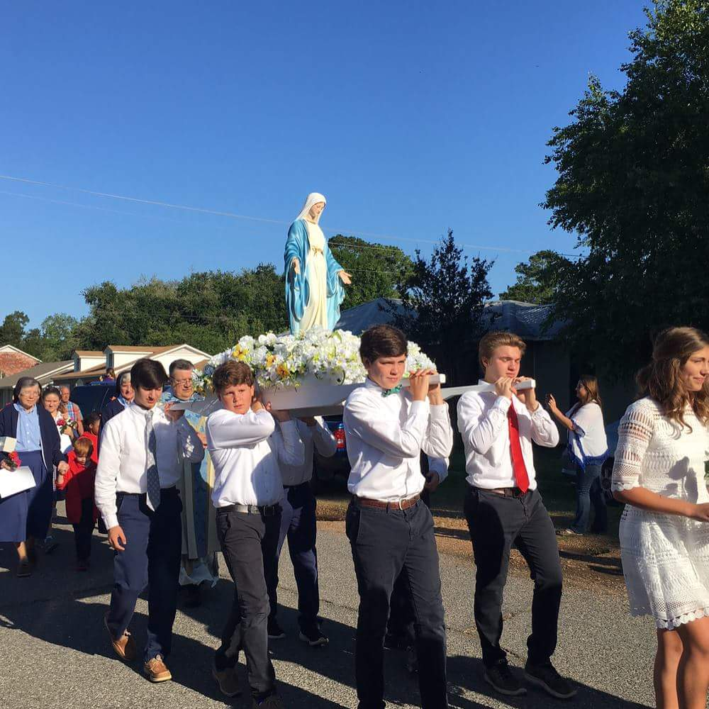

The program aims to introduce St. Philomena, the power of her intercession and the integrity of her example to the youth of the 21st century.

The work of the Children of Mary is organized around twelve virtues or "stars" that guide the spiritual formation of our members throughout the year.